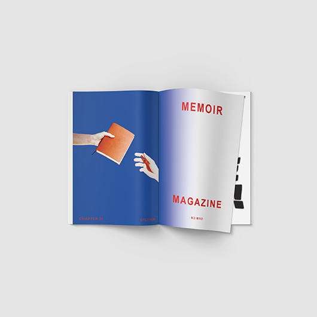
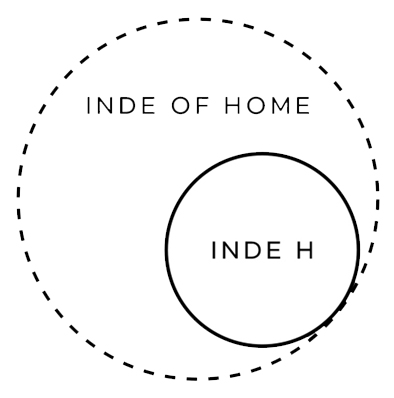

PROJECT 01 INDE H.
PROJECT 02 MEMOIR MAGAZINE
PROJECT 03 EXHIBITION
PROJECT 04 BRANDING
인디오브홈은 아날로그 예술적 취미활동과 수집을 도모하는 브랜드이자
회고하는 브랜드입니다. 개인의 독립된 공간에서 이루어질 수 있을 모든 예술
행위들을 존중하며 이를 함께 만들어갑니다.
따라서 사람, 공간, 형상 등 주제와 분야를 막론하고 모든 것을 함께 회고합니다.
프로젝트 01. 인디에이치는 인디오브홈의 퍼스널 굿즈 브랜드입니다.
국내 여러 편집샵과 온라인 스토어에서 만나볼 수 있는 만드는 회고록,
굿즈 브랜드 인디에이치입니다. 기하학적인 그래픽 요소들과 직접 촬영한 사진
들을 활용해 굿즈를 제작합니다. 굿즈들은 모두 제작자의 회고가 담긴
작품들로써, 각각 깊은 이야기들과 철학들을 담아 제작됩니다.

프로젝트 02. MM 매거진은 사람을 회고합니다. 누군가의 결을 함께 이해해보며
동시에 회고합니다. 회고록은 과거의 나를 돌아보는 행위기도 하지만, 앞으로의
길에 방향을 잡아주는 역할을 수행합니다. 이를 다른 이들과 공유하며 소통할 수
있을 매거진 MM입니다.

프로젝트 03. 전시기획. 인디오브홈은 회고록을 주제로 개인 전시를 기획하여
한 개인의 회고를 공유합니다. 작가의 기억이 담긴 굿즈들을 함께 제작해 협업을
진행하며, 이를 유통하기도 합니다.
프로젝트 04. 브랜딩. 인디오브홈의 협력사인 SYS.THEM은 기업을 회고하는
브랜딩 업체입니다. 신생 기업의 초기 수익모델 확정 후 필요할 디자인적인 모든
요소들을 기업의 철학과 이야기들을 회고할 수 있는 형태로 작업을 합니다.